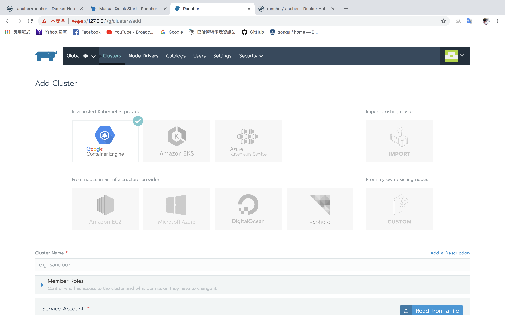
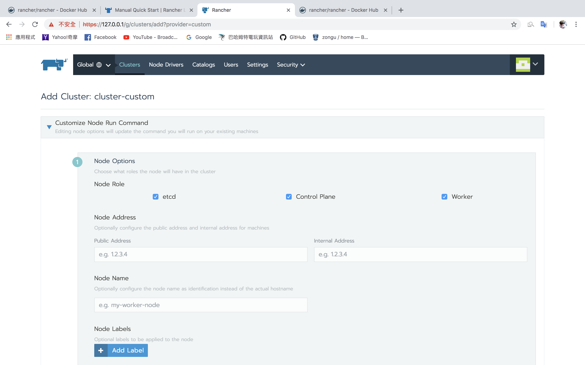
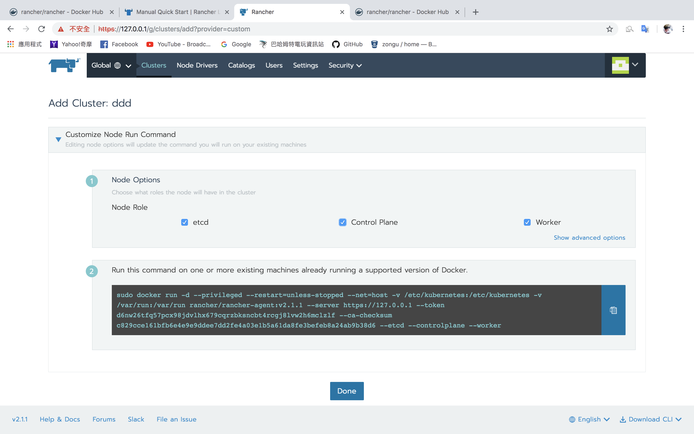

<!DOCTYPE html><html lang="zh-cn"><head><meta name="generator" content="Hexo 3.9.0"><meta charset="utf-8"><meta http-equiv="X-UA-Compatible" content="IE=Edge"><meta name="viewport" content="width=device-width,initial-scale=1.0,minimum-scale=1.0,maximum-scale=1.0,user-scalable=no"><meta name="format-detection" content="telephone=no"><meta name="format-detection" content="email=no"><meta name="description"><meta name="keywords" content="kubernets"><title>Rancher2.x-好用的容器叢集管理工具 - Carter`s Blog</title><link rel="stylesheet" href="/css/main_style.min.css"><link rel="icon" href="/favicon.ico"></head><body><input id="navi" type="checkbox"><ul class="main-navication"><li><a href="/"><span>Home</span></a></li><li><a href="https://github.com/zongu"><span>Github</span></a></li></ul><div class="wrapper" id="wrap"><div class="post-header"><label class="navi-button light" for="navi">MENU</label><div class="post-title"><h1 class="title">Rancher2.x-好用的容器叢集管理工具</h1><ul class="meta"><li><i class="icon icon-author"></i>Carter Ho</li><li><i class="icon icon-clock"></i>0 Minutes</li><li><i class="icon icon-calendar"></i>2018年10月27日</li></ul></div></div><div class="article-content" style="max-width:800px"><ul>
<li>之前一直有聽人在說Rancher2代的功能跟K8s很類似，在摸完K8s後就來玩玩看Rancher2，images可以到<a href="https://hub.docker.com/r/rancher/rancher/" target="_blank" rel="noopener">docker-hub</a>上下載。</li>
<li>按照<a href="https://rancher.com/docs/rancher/v2.x/en/quick-start-guide/deployment/quickstart-manual-setup/#2-install-rancher" target="_blank" rel="noopener">官網</a>上面的方式來啟動Rancher，開啟運作的管理介面後我就知道為什麼會說他像K8s，其實他比較像是容器叢集的管理工具，操作方式跟1不太一樣，但是精神是一樣的。</li>
<li>可以看到他是支援一些比較知名的公有雲，以gcp為例，只要到IAM創建權限Json就可以讓Rancher來做控管</li>
<li>記得把etcd跟Control Plan打開</li>
<li>之後把下面產出的docker run指令複製到終端機去執行自定義叢集就完成了</li>
</ul>
</div><div class="article-meta" style="max-width:800px"></div><ul class="navication"><li class="home"><a href="/"><i class="icon icon-home"></i></a></li><li><a href="/2018/10/27/rancher2-0-node-restart該注意的事情/"><i class="icon icon-arror-left"></i></a></li><li><a href="/2018/10/21/owin-google-redirecuri/"><i class="icon icon-arror-right"></i></a></li></ul><div class="page-footer"><div class="top"><ul class="social"><li><a href="https://github.com/zongu" title="Zongu" target="_blank"><i class="icon icon-github"></i></a></li><li><a href="https://www.facebook.com/zongyuh2" title="Zongu" target="_blank"><i class="icon icon-facebook"></i></a></li><li><a href="https://chretbow.github.io" title="Chretbow" target="_blank"><i class="icon icon-github"></i></a></li></ul></div><div class="bottom"><p class="copyright">© 2024 Carter`s Blog</p></div></div></div><script>var wrap = document.getElementById('wrap');
window.onload = function () {
  wrap.className += ' done';
}</script></body></html>